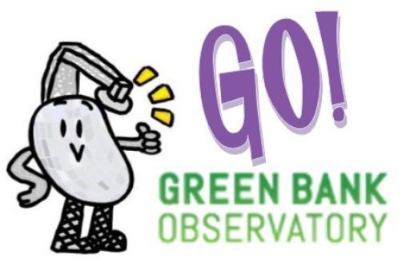

|

Fact Sheets
Quick Facts
Detailed Facts
Quick Facts about the Green Bank Observatory
The Green Bank Telescope (GBT) is one of NSF’s incredibly productive telescopes and remains at the cutting edge of astronomy.
- The GBT is a very flexible telescope that has made ground breaking discoveries in fields as broad as quantum mechanics, the study of gravity, the formation of our galaxy the Milky Way, the study of mysterious Fast Radio Bursts, and the search for life beyond Earth.
- The GBT has made many discoveries in the field of astrochemistry and recently discovered the largest aromatic molecule ever found in space. This type of research helps scientists learn more about where the building blocks of life can be found in space.
- Planetary defense is an important field, and while the new Vera C. Rubin Observatory is predicted to discover millions of new Solar System objects, the GBT is vital to characterize newfound asteroids’ properties and behaviors, giving us valuable information about space rocks that may pose a threat to Earth.
- The GBT assisted with NASA’s DART Mission (the Double Asteroid Redirection Test), which involved crashing a spaceship into a small asteroid and demonstrating the resulting change to its orbit, a valuable proof-of-concept for future asteroid deflection efforts.
- The GBT has collaborated with the Event Horizon Telescope to image black holes to learn more about these mysterious objects.
- The GBT is open to all scientists in the US, with time awarded solely on intellectual merit.
The GBO provides educational opportunities to rural students and students from across the country, inspiring them to learn about science, engineering, and technical trades — serving as a STEM career pipeline for WV, the Appalachian region, and the US as a whole.
- The GBO hosts several camps and educational programs, including Radio Astronomer for a Day, the PING camp and Governor’s Science Institute for rising 9th graders, Scout troop visits, and more.
- The GBO’s educational programs and lodging onsite are fully booked over a year in advance.
- The GBO also hosts teams of students and scientists that combine education with active research, such as the ALFALFA group (which is geared toward undergraduate participation) and the Pulsar Science Collaboratory, which involves middle school, high school, community college, and 4-year university students and beyond.
- GBO staff work with local high schools to lead STEM classes and coach robotics events, expanding their community reach even further.
- The GBO’s world-class machine shop has apprenticed many students in machinist trades, who have gone on to work for the Observatory or other facilities full time.
- Over 50,000 visitors and 3,500 students visit Green Bank every year to learn and be inspired by science and technology.
GBO operations accounts for less than 0.01% of the NSF’s Facilities budget.
- Ceasing or altering the operation of the GBO could wipe out up to $30 million in economic contributions to the economy in the state of West Virginia.
- A decrease in NSF funding for the GBT will limit the amount of time available for the open science that has been the engine of discovery thus far.
- Ceasing science operations at the GBT will negatively affect the careers of over 900 astronomers, many of whom are just entering the field
- Cuts to the GBT’s funding come at a time when other countries are investing in radio astronomy. This threatens US leadership in this cutting edge field while on the doorstep of many new breakthroughs in science and technology.
Back to Top
Detailed Facts about the Green Bank Observatory
More information can also be found on the Green Bank Observatory’s web page www.greenbankobservatory.org
History
- The Green Bank site was dedicated on October 17, 1957
- The West Virginia Radio Astronomy Zoning Act was passed in 1956
- The National Radio Quiet Zone was established in 1958
- The first summer students arrive in Green Bank in 1959
- The first telescope was completed in 1958 – an 85 foot diameter telescope which remains on site today
- The first NRAO interferometric measurements were in Green Bank in 1964 (with two 85 foot telescopes)
- Ground breaking for the GBT was in 1991, it was dedicated in 2000, and went into full operation in 2003. Enhancement of the telescope to full high frequency (115 GHz) operation in 2011.
- The Green Bank Observatory was originally funded by the National Science Foundation
- The majority of the site buildings, telescopes, and facilities were either built by, or are owned by, the National Science Foundation
- In 2012 95% of the funding for the site operations was provided by the National Science Foundation
Back to Top
General Information
- The Green Bank Observatory is home to eight telescopes including the Robert C. Byrd Green Bank Telescope (GBT)
- Green Bank Observatory employs 105 people on the Green Bank site year-round, and 140-150 people during summer months
- Approximately 50,000 visitors come to the Green Bank site each year
- More than 3,500 students participate in Green Bank’s educational programs within the past year
- The site technology development program typically works with 5-15 college/universities at any one time
- 55% of the Green Bank staff are native from Pocahontas County and West Virginia
- The National Radio Quiet Zone is administered for Green Bank Observatory and the Sugar Grove Research Facility
- The site telescopes range in diameter from 40 feet – 330 feet (12 – 100 meters)
Back to Top
Green Bank Telescope
- The GBT is the largest fully-steerable telescope in the world
- GBT operation used to be fully but is now only partially funded by the National Science Foundation’s Astronomy division
- The GBT is running observations roughly 6,500 hours each year, more than any other observatory
- For each hour of time available for science on the GBT, roughly 3-4 hours are requested
- More than 600 individual scientists and students proposed to use the GBT within the past year
- The surface of the GBT is perfectly smooth to a noise level of 260 microns (5 human hairs)
- The pointing accuracy of the GBT is 2 arc seconds, able to resolve a quarter at 3 miles
- The GBT weighs almost 17 million pounds and stands over 485 feet above ground level
- The GBT’s collecting area is 2.34 acres and its diameter is 300 feet
- The GBT operates 24 hours/day, 362 days/year
- The GBT cost roughly $95,000,000 to build
Back to Top
GBO Science
- The Green Bank Telescope (GBT) permits study of very high density material found in the Universe, leading to a better understanding of the nature of matter.
- The GBT played a crucial role in the cutting-edge efforts and helped make a detection of gravitational waves from supermassive black holes, through a technique called pulsar timing. This technique is sensitive to an entirely different class of objects than LIGO.
- The Green Bank Telescope (GBT) is used to discover and measure interstellar chemical processes of pre-biotic chemistry in star forming regions.
- The Green Bank Telescope’s (GBT) world renowned sensitivity, resolution, and sky coverage allows the study of molecules on comets – assisting in the study of how life came to be on Earth.
- The Green Bank Telescope (GBT) can look back in time to the period when planets were first forming and provide important information on planetary science.
- The Green Bank Telescope (GBT) can work with other telescopes in California and around the world to image the surface of planets, moons, and even the edge of black holes.
- The Green Bank Telescope (GBT) is being used for research regarding the formation and evolution of star clusters, the role of filaments, and formation location of high mass stars.
- The Green Bank Telescope (GBT) can map gas to extremely low densities which helps explain questions about the formation and evolution of galaxies.
- The Green Bank Telescope (GBT) is monitoring timing discrepancies in pulsars to detect gravitational waves as part of the North American Nanohertz Observatory for Gravitation Waves (NANOGrav).
- The Green Bank Telescope (GBT) has discovered the fastest spinning pulsar known – a city-sized star rotating 716 times per second.
- The Green Bank Telescope (GBT) discovered a unique pulsar with two stellar companions that is putting Einstein to the test in unique ways.
- West Virginia University, specifically the Department of Physics and Astronomy, has partnered with the Green Bank Observatory to allow professors and students the opportunity to pursue their own research projects.
- The Green Bank Telescope (GBT) isn’t a single purpose experiment – it is an incredibly flexible and adaptable facility that enables a wide range of cutting edge astronomy and physics, impacting fields as far removed as quantum mechanics and astrobiology.
The following information was gathered by another research effort done in 2012 when the initial changes to the funding by NSF were announced:
- Some projects the GBT does cannot be done at other telescopes. For instance,
- No other telescope covers, with the sensitivity of the GBT, frequencies as low or as high in the radio spectrum. Without the GBT, certain windows to the universe will be closed.
- No other telescope offers the combination of sensitivity and sky coverage for finding and timing pulsars.
- No other telescope can match the GBT’s sensitivity to the faint spectral lines of molecules in space, including complex organic ones that are necessary for the development of life.
- The GBT is the best in its class at detecting faint, diffuse hydrogen gas in space, gas that tells us about the true structure of the universe and how it came to look the way it does today.
Back to Top
GBO Technology and Observing Time
The following information was gathered by another research effort done in 2012 when the initial changes to the funding by NSF were announced.
- Once a telescope is gone, if you want to do the things that telescope used to do, you have to build another telescope. We already have this one. Divesting it and then deciding later that we care about precision single-dish radio astronomy will cost a lot more–in terms of dollars, lost time, missed scientific results, and lags in technology–than continuing to fund the GBT.
- Innovation in American radio astronomy will suffer. The telescopes remaining at the NRAO are interferometers (telescopes made of multiple antennas)–to test a new receiver or system on the VLA or ALMA, you will need to build 28 or 66 of them in order to even test whether or not they work. In addition to being a pain, that costs a lot of money.
- We have official collaborations with 18 universities that depend on our knowledge and ability to, you know, help produce instruments and put them on the telescope. These universities, because of the bullet above, will not be able to afford co-development with a new, GBT-less NRAO.
- Typically, approximately 600 astronomers put in proposals to use the GBT each year. Given that there are only about 10,000 astronomers total in the world, that’s a big chunk of the community.
- If the observatory is non-federally funded, or if it is not funded at all and astronomers turn to other telescopes, the observatory and/or those telescopes will not have an “open skies” policy. “Open skies” means that anyone can apply to use the telescopes, and the only thing between you and the control room is the scientific merit of your proposal. In other countries, and on privately funded telescopes, the sky is not so open, and time is often based on affiliation or citizenship which would limit the opportunity for US researchers.
- The GBT typically does about 6,600 hours of observations in a year. That’s 6,600 hours–necessary for publishing papers–that hundreds of astronomers will now have to get elsewhere. The loss of this much potential observing time will lead to oversubscription on other telescopes, meaning that many people who need to do observations to keep their jobs will not be able to do observations, meaning that they may not be able to keep their jobs or, at the very least, will not be competitive.
- And what will the scarcity of observing hours do to radio astronomy graduate students and their ability to complete theses that will allow them to get jobs (maybe) later?
Back to Top
GBO Education Programs
- The Green Bank Observatory has many assests suited for educational opportunities: a research laboratory; world renowned scientists and engineers dedicated to education and outreach; facilities including the Green Bank Science Center, radio telescopes, housing, and food services.
- The Green Bank Observatory partners with the local school district to provide a unique and comprehensive educational opportunity not found in any other rural location.
- The 25,000 square foot Science Center contains classrooms, an auditorium, a 4,000 square foot interactive exhibit hall, and knowledgeable staff available for questions and tours of the site.
- The Green Bank Observatory’s facilities are used each year for monthly star parties, annual conferences for amateur astronomers, annual meeting for the Society of Amateur Radio Astronomers, scout, church group, and school field trips, as well as many other gatherings.
- The 40-Foot telescope is used as a teaching tool specifically for students and teachers to gain hands on experience with scientific equipment, calibration techniques, data recording, acquaintance with scientific terminology, and many other skills over a series of one or more days since the ability to stay on site is available to them.
- The Pulsar Science Collaboratory, a nationally recognized program and in partnership with WVU, allows middle and high school students, undergraduate students, and teachers to analyze data for pulsars using data from the Green Bank Telescope (GBT). To date, more than 100 teachers and approximately 1,000 students from 18 states have participated in this program to identify 6 new pulsars and 3 transient objects.
- The 20-meter telescope is used for Skynet, a distributed network of robotic telescopes for research and education, which allows students to take images and radio data, track asteroids, and many other projects.
- The Green Bank Observatory participates in the PING program to inspire and provide unique experiences through a two week summer camp for middle school students and an eight to ten week internship for undergraduate students.
- The Green Bank Observatory offers the summer Research Experience for Undergraduates program allowing students the opportunity to do onsite projects in astronomy, engineering, and computer science. The students present the results of their research in a talk and paper at the end of the term and many go on to be published in scientific journals.
- The Green Bank Observatory participates and provides resources for science teachers’ professional development via the Earth/Space Science (ESS) Passport program. The ESS Passport program is a two year process in learning ESS content, WV Next Generation Science Standards (WV NxGen & NGSS), engineering design, and best pedagogical practices. The program includes materials and onsite workshops to achieve certification as GLOBE teachers and the ability to check out NASA loaner kits on space weather and robotics.
- The Green Bank Observatory has partnered with NASA and the West Virginia Space Grant Consortium to bring trained college ambassadors to visit K-12 classrooms through the West Virginia Science Public Outreach Team (SPOT). The SPOT ambassadors increase student and teacher awareness and interest in astronomy and space-related STEM research, programs, and careers in West Virginia while also providing valuable exposure to college role models.
Back to Top
GBO Economic Impact
- Over 100 employees are employed annually with an additional 40 seasonal jobs which accounts for approximately 5% of the total work force in Pocahontas County.
- Many employees and/or spouses work as emergency service personnel, school coaches, and teachers in the area.
- Salary base exceeds $14 million and when the state average expenditure of base wage is used for living expenses – the employees at GBO contribute nearly $11.1 million to the economy, but with the ripple effect can reach almost $18 million.
- There are over 50,000 visitors annually as tourists and educators. Based on an average expenditure per day for lodging, meals, souvenirs, recreation, and entertainment – it is estimated that the GBO visitors contribute, after considering the ripple effect of economic activity in an area, close to $12 million to the economy.
- Based on the salary base at Green Bank and living expenses and estimates of average expenditure by guests to GBO, it is estimated that the Green Bank Observatory contributes close to $30 million to the local and state economies.
The following information was gathered by another research effort done in 2012 when the initial changes to the funding by NSF were announced.
- The observatory is the fourth-largest employer in the area. Divesting it means many people move away, or that they stay and vie for the minimal, often seasonal, other jobs in the county. The few businesses in Green Bank probably would not be able to survive, so even more jobs would be lost. The people who work at the observatory also coach soccer teams and build libraries and put on the county science fair and various festivals. And they have spouses who teach at the schools and contribute to the art coop and work at the libraries. The community would suffer greatly if there were no more GBT.
Back to Top
Emergency Services
- Staff are members of the local emergency services crews, serving in the following capacities:
- Deputy Fire Chief
- Treasure
- EMTs
- Firefighters
- Ambulance Drivers
- County Search and Rescue
- Local Emergency Planning Board members
- Amateur Radio Emergency Services – Pocahontas County
- Amateur Radio Civil Emergency Services
Schools
- Support for the local school system comes two ways – through programs which are hosted by the observatory as well as through local staff participation in school activities and planning. A few of the ways staff help the local schools include:
- School Board Members
- Business Partner Scholarships
- Annual donation to the PCHS Science Scholarship
- Organizer and host of primary fundraiser for the William Dilley Track Scholarship
- Serving on school and school board committees
- Levy Committee
- School Calendar committee
- 10 year planning committee
- 5 year strategic planning committee
- Superintendent’s Advisory Committee
- Local School Improvement Council (GBEMS, PCHS)
- Title IV Committee (GBEMS)
- Providing tutoring for local students as part of their in-school lessons
- Annual support and volunteers:
- GBEMS and PCHS Career Days
- Read Aloud
- Literacy Fair judges
- Socials Studies Far Judges
- Science Fair help and mentoring
- Math Tutors
- School Treasurer (MMS)
- Math Field Day
- County Math Field day is hosted at the Observatory
- GBEMS tutors
- Pocahontas County Science Fair
- Pocahontas County Science Fair is run and hosted by the Observatory
- Mentoring for all county science fair participants
- Hour of Code
- Annual hour of code with PCHS is run by the Observatory
- Science Bowl
- Judges, moderator, scorekeeper for RESA IV bowl
- High School Athletics
- Observatory staff have been coaches and assistant coaches in the past for the high school soccer, basketball, and baseball teams
- Timekeeper/Scorekeeper for PCHS athletics
- Radio Announcer for PCHS athletics
Community Organizations
Observatory staff serve on a wide variety of community organizations and boards. These include:
- Pocahontas Dramas, Fairs and Festivals Board
- Opera House Foundation
- Pocahontas County Convention and Visitors Bureau
- Pocahontas County Chamber of Commerce
- First Citizens Bank Board of Directors
- Pocahontas County Parks and Recreation
- Pocahontas County Prevention Coalition
- Pocahontas County Democratic Exec. Comm.
- Nothern Pocahontas Community Wellness Board
- Elkins YMCA Board of Directors
- 4-H Foundation
- Allegheny Mountain Radio
- 8 Rivers Amateur Radio Club
- National Weather Service, Cooperative Observer
- Air Weather Association
- Boy Scouts Scoutmaster, volunteers
- Pocahontas County Youth Soccer – coaches, board members, schedulers, referees
- Pocahontas County Youth Baseball League, volunteers
- Adopt-A-Highway Program, volunteer
- ExploreWV Geocaching, volunteer
- Dunmore Community Center, volunteer
- Pocahontas County Drama Workshop
- Elkins Pilots Club
- Durbin 5K Run
- Seneca Woodlands Women’s Club
Back to Top
|
|